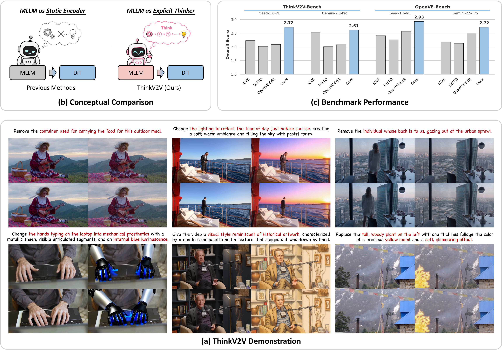
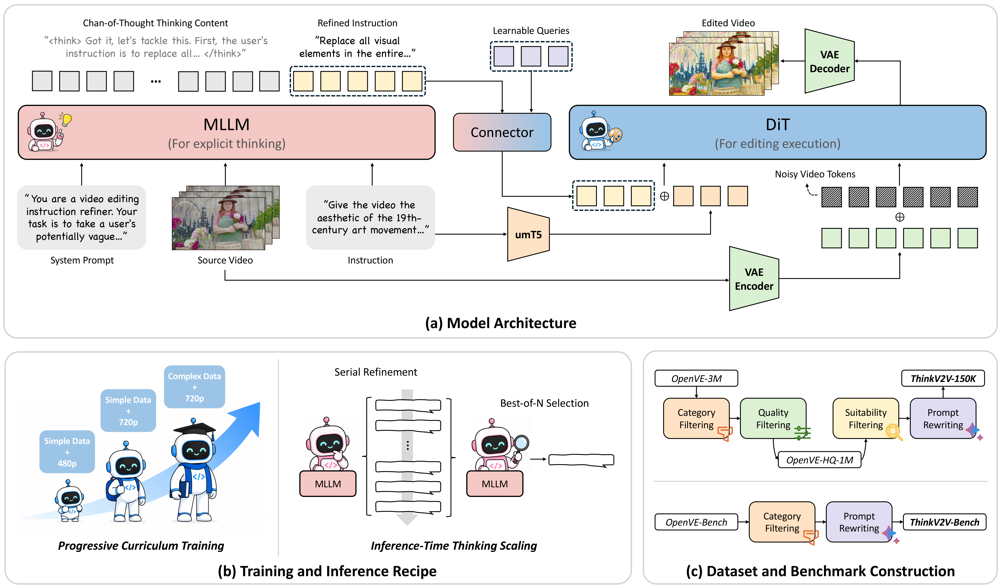
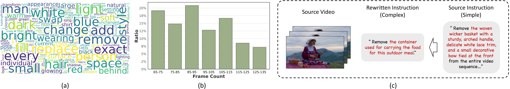

Implicit instructions need reasoning
Existing video editors often work well for direct prompts, but struggle when the true editing goal must be derived from temporal dynamics, object relations, or causal context.
Real-world video editing instructions can be implicit, indirect, and causality-heavy. ThinkV2V empowers an MLLM to first reason over the source video and instruction, then turns the refined intent into robust DiT conditions for generating the edited video.

Existing video editors often work well for direct prompts, but struggle when the true editing goal must be derived from temporal dynamics, object relations, or causal context.
Instead of using the MLLM as a static semantic encoder, ThinkV2V activates Chain-of-Thought reasoning and produces a refined prompt before generation.
MLLM hidden states, original text embeddings, and source-video VAE features jointly condition a DiT generator for faithful editing execution.
ThinkV2V builds on a practical MLLM-to-DiT architecture and incorporates dedicated training and inference strategies that elicit reasoning under complex editing instructions.

The MLLM reads the source video and instruction, reasons about the hidden intent, and passes features through the connector to align them with the DiT conditioning space.
Reasoning features, original prompt embeddings, and source-video VAE features jointly condition the DiT generator for faithful editing execution.
Training progresses from stable basic editing to high-resolution adaptation and reasoning-intensive cases, gradually strengthening reliable execution.
Serial refinement plus best-of-N selection lets the MLLM revisit candidate prompts and select the one best aligned with the original request.
We also introduce ThinkV2V-150K and ThinkV2V-Bench for the community, serving as a reasoning-oriented training set and benchmark, respectively.

Results are reported on ThinkV2V-Bench and OpenVE-Bench using Seed-1.6-VL and Gemini-2.5-Pro judges, covering diverse editing categories and instruction complexities.
| Method | #Param. | Global Style | Bg. Change | Local Change | Local Remove | Local Add | Overall |
|---|---|---|---|---|---|---|---|
| VACE | 14B | 1.33 | 1.17 | 1.41 | 1.00 | 1.05 | 1.19 |
| OmniVideo | 1.3B | 1.92 | 1.40 | 1.91 | 1.96 | 1.87 | 1.82 |
| ReCo | 1.3B | 2.25 | 1.62 | 2.50 | 3.13 | 2.39 | 2.26 |
| InsVIE | 2B | 2.08 | 1.18 | 1.48 | 1.04 | 1.24 | 1.40 |
| Lucy-Edit | 5B | 1.69 | 2.08 | 2.84 | 1.09 | 2.21 | 2.01 |
| ICVE | 13B | 1.95 | 2.04 | 2.91 | 2.05 | 2.12 | 2.23 |
| DITTO | 14B | 3.28 | 1.93 | 2.12 | 1.00 | 1.82 | 2.02 |
| OpenVE-Edit | 5B | 2.24 | 2.49 | 2.55 | 1.14 | 2.05 | 2.09 |
| ThinkV2V | 5B | 3.13 | 2.67 | 3.07 | 2.30 | 2.42 | 2.72 |
| Method | #Param. | Global Style | Bg. Change | Local Change | Local Remove | Local Add | Overall |
|---|---|---|---|---|---|---|---|
| VACE | 14B | 1.77 | 1.91 | 1.95 | 2.07 | 1.48 | 1.83 |
| OmniVideo | 1.3B | 2.48 | 1.18 | 1.25 | 1.56 | 1.23 | 1.52 |
| ReCo | 1.3B | 2.58 | 1.60 | 2.03 | 2.71 | 2.42 | 2.27 |
| InsVIE | 2B | 2.90 | 1.18 | 1.46 | 1.38 | 1.29 | 1.63 |
| Lucy-Edit | 5B | 2.84 | 2.01 | 3.12 | 1.87 | 2.39 | 2.46 |
| ICVE | 13B | 2.90 | 1.99 | 2.98 | 2.23 | 2.36 | 2.52 |
| DITTO | 14B | 3.83 | 1.36 | 1.97 | 1.39 | 1.57 | 2.01 |
| OpenVE-Edit | 5B | 3.06 | 2.05 | 2.06 | 1.32 | 1.90 | 2.08 |
| ThinkV2V | 5B | 3.74 | 2.39 | 2.89 | 2.03 | 2.02 | 2.61 |
| Method | #Param. | Global Style | Bg. Change | Local Change | Local Remove | Local Add | Overall |
|---|---|---|---|---|---|---|---|
| VACE | 14B | 1.41 | 1.16 | 1.43 | 1.00 | 1.05 | 1.21 |
| OmniVideo | 1.3B | 1.02 | 1.00 | 1.00 | 1.00 | 1.00 | 1.00 |
| ReCo | 1.3B | 2.68 | 1.69 | 2.67 | 2.46 | 2.42 | 2.38 |
| InsVIE | 2B | 2.25 | 1.23 | 1.60 | 1.00 | 1.23 | 1.46 |
| Lucy-Edit | 5B | 2.17 | 2.20 | 3.30 | 1.03 | 2.37 | 2.21 |
| ICVE | 13B | 2.35 | 1.86 | 2.91 | 2.68 | 2.27 | 2.41 |
| DITTO | 14B | 3.70 | 2.23 | 2.28 | 1.00 | 2.08 | 2.26 |
| OpenVE-Edit | 5B | 3.11 | 2.72 | 3.19 | 1.42 | 2.41 | 2.57 |
| ThinkV2V | 5B | 3.41 | 2.49 | 3.49 | 2.83 | 2.43 | 2.93 |
| Method | #Param. | Global Style | Bg. Change | Local Change | Local Remove | Local Add | Overall |
|---|---|---|---|---|---|---|---|
| VACE | 14B | 1.49 | 1.55 | 2.07 | 1.46 | 1.26 | 1.57 |
| OmniVideo | 1.3B | 1.11 | 1.18 | 1.14 | 1.14 | 1.36 | 1.19 |
| ReCo | 1.3B | 2.69 | 1.64 | 2.09 | 2.71 | 1.95 | 2.20 |
| InsVIE | 2B | 2.20 | 1.06 | 1.48 | 1.36 | 1.17 | 1.45 |
| Lucy-Edit | 5B | 2.27 | 1.57 | 3.20 | 1.75 | 2.30 | 2.22 |
| ICVE | 13B | 2.22 | 1.62 | 2.57 | 2.51 | 1.97 | 2.18 |
| DITTO | 14B | 4.01 | 1.68 | 2.03 | 1.53 | 1.41 | 2.13 |
| OpenVE-Edit | 5B | 3.16 | 2.36 | 2.98 | 1.85 | 2.15 | 2.50 |
| ThinkV2V | 5B | 3.81 | 2.12 | 3.48 | 2.39 | 1.85 | 2.72 |
ThinkV2V reasons over complex editing intent and produces instruction-aligned videos.
Change the hands typing on the laptop into mechanical prosthetics with a metallic sheen, visible articulated segments, and an internal blue luminescence.
Give the video a visual style reminiscent of historical artwork, characterized by a gentle color palette and a texture that suggests it was drawn by hand.
Change the lighting to reflect the time of day just before sunrise, creating a soft, warm ambiance and filling the sky with pastel tones.
Replace the tall, woody plant on the left with one that has foliage the color of a precious yellow metal and a soft, glimmering effect.
Remove the individual whose back is to us, gazing out at the urban sprawl.
Transform the visual into an art style that uses water-soluble pigments, characterized by soft edges and transparent color washes.
ThinkV2V: Unleashing the Reasoning Capability of MLLMs for Instruction-Guided Video Editing
Paper ↗@article{zhou2026thinkv2v,
title = {ThinkV2V: Unleashing the Reasoning Capability of MLLMs for Instruction-Guided Video Editing},
author = {Zhou, Donghao and He, Haoyang and Zhang, Fan and Yang, Hao and Liu, Guisheng and Gao, Xin and Wan, Zhongwei and Bu, Xingyuan and Wang, Jie and Yang, Qiangpeng and Wen, Shilei and Fu, Chi-Wing and Heng, Pheng-Ann},
year = {2026}
}